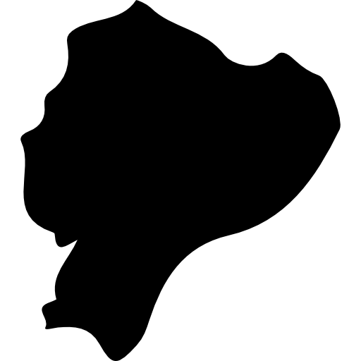
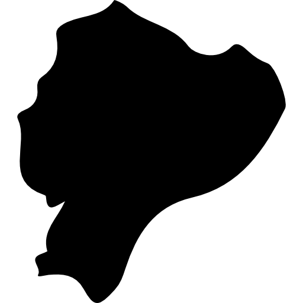

Equador, o destino dos sonhos! Um país de belezas deslumbrantes, onde as montanhas andinas se erguem majestosas, as florestas tropicais vibram de vida, e uma cultura única pulsa em cada cidade. Do charme histórico de Quito à diversidade fascinante das Ilhas Galápagos, o Equador oferece uma experiência incomparável, repleta de aventura, encantos naturais e autenticidade. Venha explorar paisagens impressionantes, sabores exóticos e uma energia única que só você encontrará aqui. Descubra o Equador.